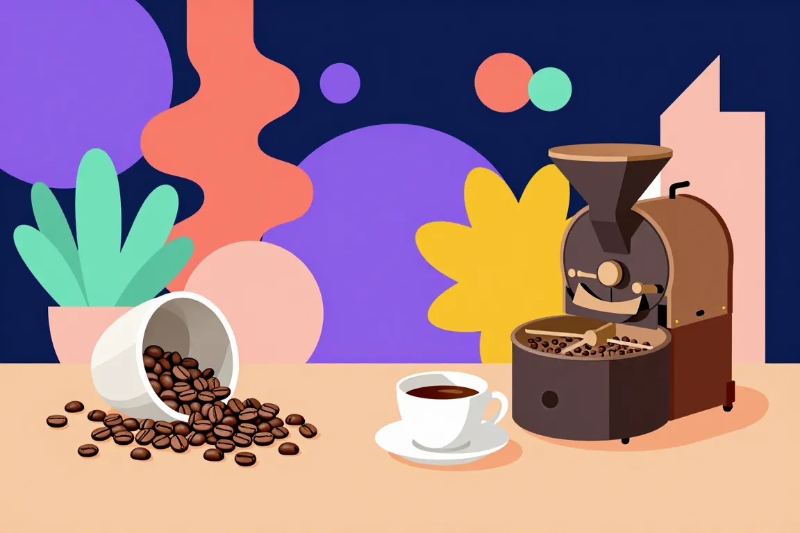

internet · 2017–2022 · also: Alegria, Big Tech Art, Flat Vector People, Globohomo
Flat vector illustrations of people with oversized limbs and tiny heads, drawn in a bright palette of 4 to 6 hues with no outlines. Facebook's Alegria system set it in 2017, and many software firms copied it.

Core thesis
Friendly, abstract people with unreal bodies make a corporate product feel human and inclusive without the risk of a specific face.
Design principles
Draw people with limbs 1.5 to 3 times longer than natural, hands and heads reduced to 10 to 15% of body height, and torsos of simple curved shapes.
Fill shapes with flat colour and use no outline, no gradient and no shading; add one 10% darker tone for a fold only when needed.
Colour skin in non-realistic tones such as purple, blue, green and orange, and use 4 to 6 hues across the whole scene.
Place figures with small plants, phone screens, charts and floating geometric shapes, scaled to be larger than the people.
Use curved, rounded outlines of shapes with a minimum 8px radius, and give limbs a stretched, noodle-like form.
Put the illustration at 40 to 60% of the width of a hero section and pair it with a left-aligned sans-serif headline.
Keep faces blank or reduced to a dot or a simple mark, with no detailed eyes or mouths.
Anti-patterns
Realistic human proportions with a head of 12.5% of body height
Outlines, gradients and drop shadows on figures
Photographic faces in the illustrated hero
A single skin colour that is the same across all figures
Detailed facial expressions and fine eyelashes
More than 6 hues in one scene
Illustrations with hand-drawn texture or visible brush marks